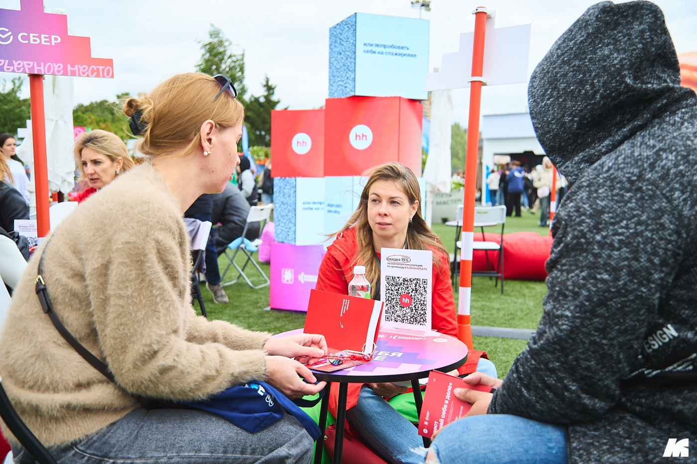

Узнали себя?
Если это про вас — вы не одни. И дело чаще не в вас
Причина почти никогда не в том, что «с вами что-то не так». Причина — в стратегии, позиционировании и каналах поиска. Всё это чинится.
15 лет в подборе и хедхантинге руководителей
Пятнадцать лет я подбирала и хантила руководителей и сильных специалистов для крупнейших компаний страны. Теперь этот опыт работает на вас: помогаю выйти на нужную позицию точечно — там, где массовые отклики уже не срабатывают.
Я знаю, как рекрутер листает ваше резюме и как бизнес принимает финальное «да» — потому что тысячи раз принимала это решение сама.
15 минут, без обязательств. Разберём ваш запрос и наметим 3–5 шагов.

Узнали себя?
Причина почти никогда не в том, что «с вами что-то не так». Причина — в стратегии, позиционировании и каналах поиска. Всё это чинится.
Знакомо? Тогда хорошая новость: это чинится. Именно этим мы и займёмся.
Разобрать мою ситуацию
Об Анне
С 2012 года я занималась подбором персонала и обучала рекрутменту — работала рекрутером и хедхантером, вела executive search для крупнейших компаний страны. Я не «прошла курс карьерного консультанта» — я сама нанимала сотни людей и знаю изнутри, что заставляет HR остановиться на одном резюме из трёхсот.
Теперь тот же рекрутерский опыт работает на вас: мы вместе выстраиваем стратегию, упаковываем ваш опыт так, как его «покупает» работодатель, и выводим вас на нужные компании и людей.
Хорошее резюме — это не список должностей. Это ответ на вопрос работодателя «зачем мне именно вы».
Я преподаю кадровый консалтинг в СПбГУ и остаюсь практиком. И честно говорю клиенту, если вижу, что шансы малы: я не продаю ложных надежд.
Опыт за каждой консультацией
С чем ко мне приходят
Узнали хотя бы один свой вопрос? Значит, нам есть о чём поговорить.
Для кого
Когда массовые отклики уже не работают, а нужен точечный выход на тех, кто реально принимает решение о найме.
Senior-специалистам и тимлидам в финансах, маркетинге, продажах, аналитике — тем, кто «всё умеет», но проходит мимо должности.
Если опыт разноплановый или редкий — найдём вашу «красную нить» и превратим разнообразие в преимущество.
Когда возраст или пауза кажутся препятствием, а на деле могут стать преимуществом при правильной подаче.
Сильные специалисты и руководители, которых раньше находили хедхантеры. Нет привычки продавать себя, иногда нет даже резюме. Помогаю собрать стратегию с нуля.
Те, кто много откликался, пробовал разные методы, но результата нет. Здесь мы чаще всего разбираем ошибки в стратегии поиска.
Подход
Я разбираю его на понятные этапы. И мы проходим их вместе — шаг за шагом.
Разбираемся, куда именно вы идёте. Составляем «карту поиска»: роли, компании, каналы, реалистичные ориентиры.
Находим ваше настоящее УТП — то, за что вас «купит» работодатель. Убираем «оливье» из разнопланового опыта.
Резюме, сопроводительное и самопрезентация, которые звучат как вы, — и при этом проходят фильтр HR и ATS.
Каналы помимо hh, выход на ЛПР и скрытые вакансии, грамотная работа с кадровыми агентствами.
Подготовка к собеседованиям, «вкусные» формулировки, зарплатная вилка, работа с оффером и выход на новое место.
Услуги и цены
Не знаете, что выбрать? Начните с бесплатной экспресс-диагностики — подскажу формат под вашу задачу.
Знакомимся, анализируем ваш запрос и цель, выявляем ключевые барьеры и составляем мини-план из 3–5 шагов. Вы уходите с пониманием, подходим ли друг другу, и чек-листом для старта.
Разбор ситуации, стратегии и резюме. Видеозапись встречи, письменные рекомендации и домашнее задание остаются у вас.
Работа по резюме и подготовка к собеседованию, ответы на ваши вопросы, домашние задания с обратной связью, онлайн-поддержка 1 месяц.
Стратегия поиска, резюме, подготовка к собеседованию, домашние задания с обратной связью, онлайн-поддержка 1 месяц.
Карта поиска, резюме под выбранные роли, сопроводительное, подготовка к интервью, аудит откликов. Поддержка в мессенджерах 7 дней в неделю. Подготовка резюме — на мне.
Всё из пакета встреч + ведение карты рынка, созвоны по мере необходимости, переговоры с работодателем. Включён месяц поддержки на период адаптации.
Все консультации проходят онлайн. После каждой встречи — видеозапись, письменные рекомендации и домашнее задание с обязательной обратной связью.
Кейсы
Пришла в панике: хаотичные отклики сразу в пять сфер, в ответ — только отказы. За одну консультацию нашли настоящее УТП, переписали резюме с цифрами, сузили фокус с полусотни вакансий до 5–7 целевых.
Был уверен, что «hh не работает». Пересобрали позиционирование и фактуру, подключили каналы помимо hh.
Размытое «и швец, и жнец», почти нулевые просмотры. После пересборки резюме и стратегии компания сама вышла на неё — без публикации вакансии.
Вышел на рынок в феврале — к июню получил оффер и уже выбирал следующий проект. Весь путь — через собственные отклики по выстроенной стратегии.
Имена изменены, детали публикуются с согласия клиентов.
Отзывы клиентов
«Когда я обратилась за помощью, я была в полном упадке сил и непонимании, как двигаться дальше. Мне казалось, что я зашла в тупик.»
С первой же встречи я почувствовала, что попала в надёжные руки. Благодаря грамотным вопросам и анализу моих навыков, ценностей и интересов я смогла увидеть новые возможности, о которых раньше даже не задумывалась.
Но самое главное — предложение, которое я получила в результате нашей работы. Это именно то, что я искала: интересные задачи, перспективы роста и комфортные условия. Спасибо за то, что Вы не просто помогли мне найти работу, а помогли мне найти себя.
«Результат превзошёл мои ожидания! Такого количества откликов я не получала никогда.»
Мне была нужна точка зрения профессионала, чтобы оформить опыт качественно. Работу искала не в своём регионе, а в Москве, и была ограничена по времени. Всего лишь через месяц я вышла на новое место с увеличенным в два раза чеком и устраивающими меня условиями.
«Резюме стало выглядеть совсем по-другому: вроде та же информация, но насколько круто она структурирована.»
Я уже 3 недели работаю в проектах, как и хотела. Многое стало понятно, получила ответы на вопросы, которые меня долгое время мучили. Очень рада, что решила остановиться на вас при выборе карьерного консультанта.
«На мои отклики по вакансиям не было ни одного отказа.»
Я и не думал, что получится так замечательно. Если бы не Вы, я бы до сих пор бегал по рынку труда со своим старым резюме и получал отказы. Со своей стороны уже порекомендовал Вас некоторым людям.
«В сентябре вышел на новое место — руководителем практики разрешения споров.»
После того как с вами проработали резюме, я его «бустанул» на hh. Почти всё время были предложения, прошёл много собеседований и выбрал место, которое показалось мне наиболее интересным. Благодарю за то, что помогли подготовиться к поискам работы.
«Ты дала не просто резюме и правки — ты дала прямую понятную и максимально эффективную оптику.»
Я вышел, меня сами нашли. Своё резюме несколько раз показывал людям среди знакомых и друзей, которые безуспешно искали себе работу. Короче — спасибо, ты топ.
Публикации и экспертность
Комментарий эксперта: почему в 2025 году искать работу стало труднее — и что с этим делать.
Читать →Серия материалов: резюме и ATS, «почему работодатели молчат», карьера после декрета, кто такие рекрутеры.
Читать →Приглашённый преподаватель авторского курса по кадровому консалтингу, спикер Высшей школы менеджмента.

hh.ru и Мэрия Казани: эксперт-волонтёр — 60+ карьерных консультаций за один день.
Регулярная аналитика рынка труда и практические разборы: резюме, отклики, переговоры об оффере.
Читать в Дзене →Частые вопросы
Да. С этого и начнём: на диагностике и первой консультации разберём ваш опыт, интересы и реальные варианты на рынке — и вы получите ясность и план.
Чаще всего резюме не «продаёт» опыт: нет цифр, размыт фокус, слабое позиционирование. Работодатель не видит ответа на вопрос «зачем мне именно вы». Это чинится — обычно за одну-две встречи.
Нет — и честно объясню почему. В найме участвуют три стороны: вы, работодатель и живой человеческий фактор. Я даю систему, инструменты и сопровождение, которые кратно повышают ваши шансы. Тот, кто «гарантирует» оффер, продаёт вам иллюзию.
Мы пишем его вместе — так резюме звучит как вы, и вы легко защитите на интервью каждую формулировку. В пакете сопровождения подготовка резюме на мне, но фактуру собираем на интервью по компетенциям.
Онлайн. После бесплатной экспресс-диагностики выбираем формат. Каждая встреча — это видеозапись, письменные рекомендации и домашнее задание с обязательной обратной связью.
Ясность и план вы получите сразу, на первой встрече. Рост числа приглашений на интервью обычно виден в течение 2–4 недель после внедрения правок.
Нет. Ядро моих клиентов — руководители и узкопрофильные эксперты, но я работаю и со специалистами. Основная экспертиза: финансы и банкинг, IT и телеком, маркетинг и продукт, продажи. На диагностике честно скажу, чем буду полезна именно вам — либо посоветую эксперта, которому доверяю.
Бесплатная экспресс-диагностика
15 минут, без обязательств. Разберём ваш запрос и вместе решим, чем я могу быть полезна. А если увижу, что вам нужен другой специалист, — честно посоветую того, кому доверяю.